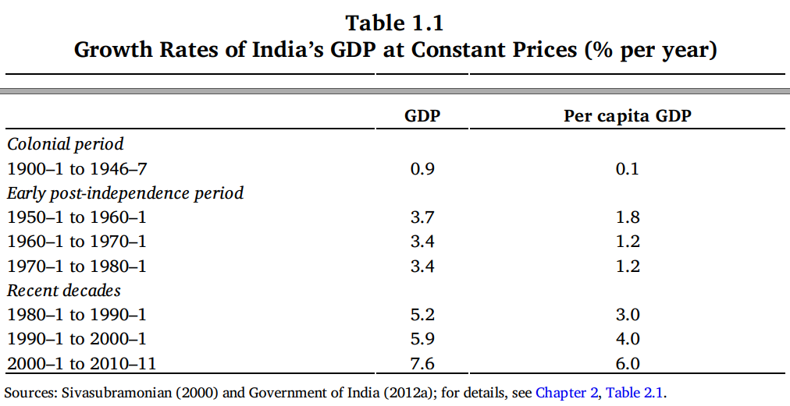
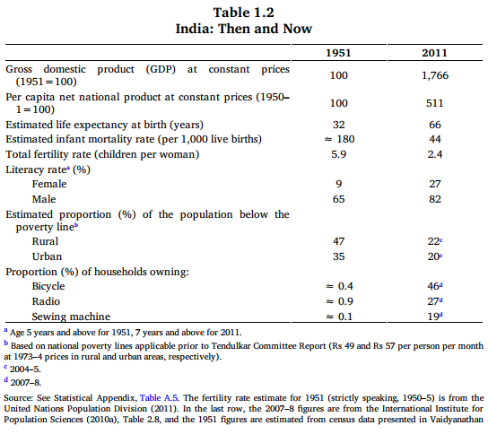

Reference
- An Uncertain Glory: India and its contradictions by Jean Drèze and Amartya Sen, 2013. Chapter 1.
Introduction
- The recent achievements of modern, democratic India are not inconsiderable, and have been widely recognized across the globe over the last decade or more.
- India’s record in pioneering democratic governance in the non-Western world is a widely acknowledged accomplishment, as is its basic success in maintaining a secular state, despite the challenges arising from its thoroughly multi-religious population and the hugely problematic history of violence around the ending days of the Raj.
- To this can be added the achievement of rapid economic growth in the last decade, when India became the second fastest-growing large economy in the world.
- However, it is important to evaluate both the achievements and failures that characterise India today.
- Have India’s old problems been eradicated? What remains to be done? And are there new problems that India has to address?
- India emerged then from an oppressive colonial rule.
- A second challenge was to avoid the danger of chaos and conflict, or even a violent break-up of the country.
- The poverty of India was perhaps the most well-known fact about the country – with little children in Europe and America being asked by their parents not to leave food on their plates because of the moral necessity to ‘think of the starving Indians’. And indeed, in 1943, just four years before colonial rule ended, India did actually have a gigantic famine in which between 2 and 3 million people died.
Achievements and opportunities
Despite that grim beginning, newly independent India rapidly went on to have a cluster of significant political and economic successes.
Nevertheless, after more than sixty years of largely successful democratic governance, India has earned its status as a leading democratic country.
The country has also shown quite powerfully how democracy can flourish despite a multitude of languages, religions and ethnicities.
On the economic front, even though the growth of the Indian economy was quite slow – about 3.5 per cent annually – for several decades after independence, this slow growth was nevertheless a very large step forward compared with the near-zero growth (and at times even economic decline) that occurred in the colonial days.
Happily, things have changed in that respect as well over the recent decades, and India has now been able to establish a new position as one of the fastest-growing economies in the world. 
There has been some slackening of the growth rate of the Indian economy very recently – partly related to the global slump (there has been a similar slowing in China as well, though from a higher base). India is still – even with its diminished growth rate below 6 per cent per year – one of the fastest-growing economies in the world.
After two hundred years of colonial domination, combined with almost total economic stagnation, the economy seems well set to remedy the country’s notorious and unenviable condition of poverty.
Along with economic progress, there has also been signiɹcant social change. Life expectancy in India today (about 66 years) is more than twice what it was in 1951 (32 years); infant mortality is about one fourth of what it used to be (44 per thousand live births today as opposed to 180 or so in 1951); and the female literacy rate has gone up from 9 per cent to 65 per cent. There have certainly been major improvements in the miserable levels of social indicators that prevailed at the time of India’s independence (see Table 1.2). 
An unfinished adgenda
- The record of India’s achievements is not easy to dismiss, but is that the whole story?
- An agreeable picture of a country in a rapid march forward towards development with justice would definitely not be a comprehensive, or even a balanced, account of what has been actually happening: indeed far from it.
- There are many major shortcomings and breakdowns – some of them gigantic – even though privileged groups, and especially the celebratory media, are often inclined to overlook them.
- Since India’s recent record of fast economic growth is often celebrated, with good reason, it is extremely important to point to the fact that the societal reach of economic progress in India has been remarkably limited.
- It is not only that the income distribution has been getting more unequal in recent years (a characteristic that India shares with China), but also that the rapid rise in real wages in China from which the working classes have benefited greatly is not matched at all by India’s relatively stagnant real wages.
- The public revenue generated by rapid economic growth has not been used to expand the social and physical infrastructure in a determined and well planned way (in this India is left far behind by China).
- There is also a continued lack of essential social services (from schooling and health care to the provision of safe water and drainage) for a huge part of the population.
- India has been climbing up the ladder of per-capita income while slipping down the slope of social indicators. -Its progress has been very much slower than China’s, Bangladesh’s, Pakistan or Nepal’s in some indicators such as longevity, literacy, child undernourishment and maternal mortality.
- Given the objectives of development and equity that India championed as it fought for independence, there is surely a huge failure here.
- It is not only that the new income generated by economic growth has been very unequally shared, but also that the resources newly created have not been utilized adequately to relieve the gigantic social deprivations of the underdogs of society.